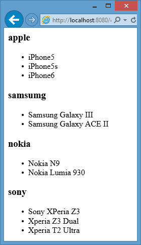

Массивы
Массивы предназначены для хранения наборов данных или элементов. Каждый элемент в массиве имеет свой уникальный ключ и значение. Итак, сохраним в массив список моделей телефонов:
<?php $phones[0] = "Nokia N9"; $phones[1] = "Samsung Galaxy ACE II"; $phones[2] = "Sony Xperia Z3"; $phones[3] = "Samsung Galaxy III"; for($i=0;$i<count($phones);$i++) echo "$phones[$i] <br />"; ?>
Здесь создается массив $phones из четыре элементов. Каждый элемент в массиве представляет собой пару ключ - значение. Так, первый элемент $phones[0] = "Nokia N9"
имеет ключ - число 0, а значение - строку "Nokia N9". В таких массивах числовые ключи еще называются индексами.
С помощью функции count() можно узнать количество элементов в массиве. А благодаря тому, что ключи идут по порядку от 0 до 3,
и зная размер массива, можно вывести элементы массивы в цикле for.
Чтобы было более понятно отношения ключей и значений элементов, выведем массив с помощью функции print_r:
print_r($phones);
У нас получится следующий вывод:
Array ( [0] => Nokia N9 [1] => Samsung Galaxy ACE II [2] => Sony Xperia Z3 [3] => Samsung Galaxy III)
Данное создание массива будет также эквивалентно следующему:
<?php $phones[] = "Nokia N9"; $phones[] = "Samsung Galaxy ACE II"; $phones[] = "Sony Xperia Z3"; $phones[] = "Samsung Galaxy III"; $num = count($phones); for($i=0;$i<$num;$i++) echo "$phones[$i] <br />"; ?>
Если не указывается ключ элемента, то PHP в качестве ключей использует числа. При этом нумерация ключей начинается с нуля, а каждый новый ключ увеличивается на единицу.
Зная ключ элемента в массиве, мы можем обратиться к этому элементу, получить или изменить его значение:
// получим элемент по ключу 1 $myPhone = $phones[1]; echo "$myPhone <br />"; // присвоение нового значения $phones[1] = "Samsung X650"; echo "$phones[1] <br />";
Но в качестве ключей могут использоваться не только целые числа, но и строки:
<?php $phones["nokia"] = "Nokia N9"; $phones["samsumg"] = "Samsung Galaxy III"; $phones["sony"] = "Sony Xperia Z3"; $phones["apple"] = "iPhone5"; echo $phones["samsumg"]; ?>
Подобные массивы еще называют ассоциативными.
Оператор array
Выше был рассмотрен один способ создания массива. Но есть и другой, который предусматривает применение оператора array().
<?php
$phones = array('iPhone', 'Samsung Galaxy S III', 'Nokia N9', 'Sony XPeria Z3');
echo $phones[1];
?>
Оператор array() принимает набор элементов. Здесь также явным образом не указаны ключи. Поэтому PHP автоматически нумерует элементы с нуля. Но мы также
можем указать для каждого элемента ключ:
<?php
$phones = array("apple"=>"iPhone5", "samsumg"=>"Samsung Galaxy III",
"nokia" => "Nokia N9", "sony" => "Sony XPeria Z3");
echo $phones["samsumg"];
?>
Операция => позволяет сопоставить ключ с определенным значением.
Перебор ассоциативных массивов
Выше мы посмотрели, как с помощью цикла for вывести все элементы массива, где ключи заданы последовательно числами от 0 до 3. Однако с ассоциативными массивами это не работает. И для них в PHP
предназначен специальный тип цикла - foreach...as:
<?php
$phones = array("apple"=>"iPhone5",
"samsumg"=>"Samsung Galaxy III",
"nokia" => "Nokia N9",
"sony" => "Sony XPeria Z3");
foreach($phones as $item)
echo "$item <br />";
?>
В цикле foreach из массива последовательно извлекаются все элементы и их значение помещается в переменную, указанную после ключевого слова
as. В данном случае в переменную $item по очереди помещаются все четыре значения из массива $phones.
Когда будет извлечен последний элемент из массива, цикл завершается.
Цикл foreach позволяет извлекать не только значения, но и ключи элементов:
<?php
$phones = array("apple"=>"iPhone5",
"samsumg"=>"Samsung Galaxy III",
"nokia" => "Nokia N9",
"sony" => "Sony XPeria Z3");
foreach($phones as $key=>$value)
echo "$key => $value <br />";
?>
Здесь при переборе элементов цикла в переменную $key будет передаваться ключ элемента, а в переменную $value ее значение.
Альтернативу циклу foreach представляет использование функций list и each:
<?php
$phones = array("apple"=>"iPhone5",
"samsumg"=>"Samsung Galaxy III",
"nokia" => "Nokia N9",
"sony" => "Sony XPeria Z3");
while (list($key, $value) = each($phones))
echo "$key => $value <br />";
?>
Цикл while будет работать, пока функция each не вернет значение false. Функция each проходит по всем элементам
массива $phones и получает его в виде массива, в который входят ключ и значение элемента. Затем этот массив передается функции list и проиcходит
присваивает значения массива переменным внутри скобок. Когда функция each закончит перебор элементов массива $phones, она возвратит false,
и действие цикла while будет завершено.
Многомерные массивы
В предыдущих примерах рассматривались только одномерные массивы, где значения элементов представляли числа, строки. Но в PHP массивы могут также быть многомерными, то есть такими, где элемент массива сам является массивом. Например, создадим многомерный массив:
<?php
$phones = array(
"apple"=> array("iPhone5", "iPhone5s", "iPhone6") ,
"samsumg"=>array("Samsung Galaxy III", "Samsung Galaxy ACE II"),
"nokia" => array("Nokia N9", "Nokia Lumia 930"),
"sony" => array("Sony XPeria Z3", "Xperia Z3 Dual", "Xperia T2 Ultra"));
foreach ($phones as $brand => $items)
{
echo "<h3>$brand</h3>";
echo "<ul>";
foreach ($items as $key => $value)
{
echo "<li>$value</li>";
}
echo "</ul>";
}
?>
И при выводе мы получим 4 списка:
Ассоциативные массивы в PHP
Чтобы обратиться к элементу данного, также надо указать ключи в квадратных скобках. Например, обратимся к первому элементу в первом массиве. Так как ключ первого массива - "apple", а ключ первого элемента в первом массиве - число 0 (так как мы явным образом не указали ключи):
echo $phones["apple"][0];
Подобным образом можно получить второй элемент третьего массива:
echo $phones["nokia"][1];
Допустим, вложенные массивы также представляют ассоциативные массивы:
<?php
$technics = array(
"phones" => array("apple" => "iPhone5",
"samsumg" => "Samsung Galaxy III",
"nokia" => "Nokia N9"),
"tablets" => array("lenovo" => "Lenovo IdeaTab A3500",
"samsung" => "Samsung Galaxy Tab 4",
"apple" => "Apple iPad Air"));
foreach ($technics as $tovar => $items)
{
echo "<h3>$tovar</h3>";
echo "<ul>";
foreach ($items as $key => $value)
{
echo "<li>$key : $value</li>";
}
echo "</ul>";
}
// присвоим одному из элементов другое значение
$technics["phones"]["nokia"] = "Nokia Lumnia 930";
// выведем это значение
echo $technics["phones"]["nokia"];
?>
Функция is_array
Функция is_array() проверяет, является ли переменная массивом, и если является, то возвращает true, иначе возвращает
false. Например:
$isar = is_array($technics); echo ($isar==true)?"это массив":"это не массив";
Функции count/sizeof
Функция count() и sizeof() получают количество элементов массива:
$number = count($technics); // то же самое, что // $number = sizeof($technics); echo "В массиве technics $number элементов";
Функции shuffle
Функция shuffle перемешивает элементы массивы случайным образом:
$os = array("Windows 95", "Windows XP", "Windows Vista", "Windows 7", "Windows 8", "Windows 10");
shuffle($os);
print_r($os);
// один из возможных вариантов
// Array ( [0] => Windows 95 [1] => Windows 7 [2] => Windows Vista [3] => Windows XP [4] => Windows 10 [5] => Windows 8)
Функции compact
Функция compact позволяет создать из набора переменных ассоциативный массив, где ключами будут сами имена переменных:
<?php
$model = "Apple II";
$producer = "Apple";
$year = 1978;
$data = compact('model', 'producer', 'year');
print_r($data);
// получится следующий вывод
// Array ( [model] => Apple II [producer] => Apple [year] => 1978 )
?>
Функция compact получает в скобках набор переменных. Каждая переменная указывается в кавычка без знака $. Результатом функции является новый массив.
Сортировка массивов
В PHP имеются два типа сортировки: сортировка строк по алфавиту и сортировка чисел по возрастанию/убыванию. Если сортируемые значения представляют строки, то они сортируются по алфавиту, если числа - то они сортируются в порядке возрастания чисел. PHP по умолчанию самостоятельно выбирает тип сортировки.
Для сортировки по возрастанию используется функция asort:
<?php
$tablets = array("lenovo" => "Lenovo IdeaTab A3500",
"samsung" => "Samsung Galaxy Tab 4",
"apple" => "Apple iPad Air");
asort($tablets);
echo "<ul>";
foreach ($tablets as $key => $value)
{
echo "<li>$key : $value</li>";
}
echo "</ul>";
?>
В данном случае значения массива представляют строки, поэтому PHP выберет сортировку по алфавиту. Однако с помощью дополнительного параметра мы можем явно указать интерпретатору PHP тип сортировки. Данный параметр может принимать три значения:
SORT_REGULAR: автоматический выбор сортировкиSORT_NUMERIC: числовая сортировкаSORT_STRING: сортировка по алфавиту
Укажем явно тип сортировки:
asort($tablets, SORT_STRING);
Чтобы отсортировать массив в обратном порядке, применяется функция arsort:
arsort($tablets);
Сортировка по ключам
Функция asort производит сортировку по значениям элементов, но также существует и еще и сортировка по ключам. Она представлена функцией
ksort:
ksort($tablets, SORT_STRING);
Сортировка по ключам в обратном порядке выполняется функцией krsort():
krsort($tablets);
Естественная сортировка
Хотя выше описанные функции сортировки прекрасно выполняют свою работу, но их возможностей все-таки недостаточно. Например, отсортируем по возрастанию следующий массив:
<?php
$os = array("Windows 7", "Windows 8", "Windows 10");
asort($os);
print_r($os);
// результат
// Array ( [2] => Windows 10 [0] => Windows 7 [1] => Windows 8 )
?>
Так как значения представляют строки, то PHP сортирует по алфавиту. Однако подобная сортировка не учитывает числа и регистр. Поэтому значение "Windows 10" будет идти в самом начале, а не в конце, как должно было быть. И для решения этой проблемы в PHP есть функция natsort(), которая выполняет естественную сортировку:
<?php
$os = array("Windows 7", "Windows 8", "Windows 10");
natsort($os);
print_r($os);
// результат
// Array ( [0] => Windows 7 [1] => Windows 8 [2] => Windows 10)
?>
Если нам надо еще при этом, чтобы сортировка не учитывала регистр, то мы можем применить функцию natcasesort():
natcasesort($os);